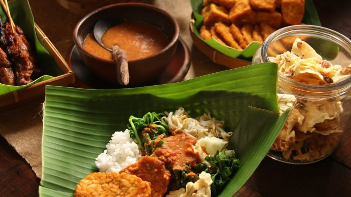
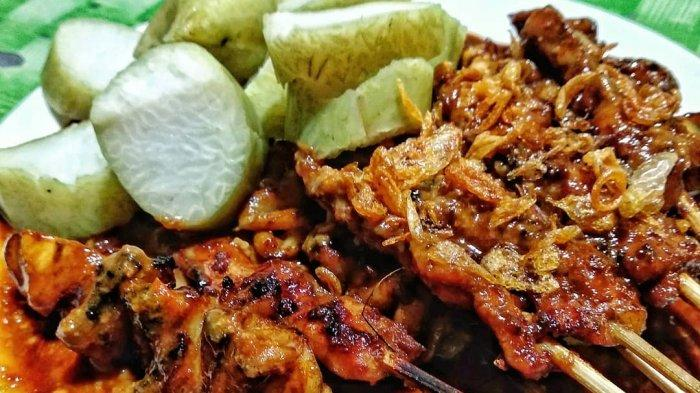
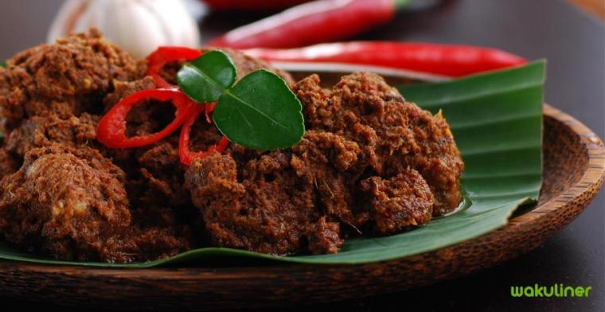

Nasi Pecel
Harga : Rp. 10.000

Pecel merupakan makanan khas masyarakat Jawa biasanya dijual di pedagang kaki lima (PKL) sampai dijajakan di restoran. Hidangan pecel juga menjangkau semua kalangan, baik kalangan atas maupun kalangan bawah. Pecel biasanya dijadikan sebagai menu untuk sarapan dan makan siang.
Berdasarkan filosofi Sunda, kata Bandung juga berasal dari kalimat Nga-Bandung-an Banda Indung, yang
merupakan
kalimat sakral dan luhur karena mengandung nilai ajaran Sunda. Nga-Bandung-an artinya menyaksikan
atau
bersaksi.
Banda adalah segala sesuatu yang berada di alam hidup yaitu di bumi dan atmosfer, baik makhluk hidup
maupun
benda mati. Sinonim dari banda adalah harta. Indung berarti Ibu atau Bumi, disebut juga sebagai Ibu
Pertiwi
tempat Banda berada.
Sate Madura
Harga : Rp. 15.000

Kota Bandung dikelilingi oleh pegunungan, sehingga bentuk morfologi wilayahnya bagaikan sebuah
mangkok
raksasa,
secara geografis kota ini terletak di tengah-tengah provinsi Jawa Barat, serta berada pada
ketinggian
±768 m di
atas permukaan laut, dengan titik tertinggi di berada di sebelah utara dengan ketinggian 1.050 meter
di
atas
permukaan laut dan sebelah selatan merupakan kawasan rendah dengan ketinggian 675 meter di atas
permukaan laut.
Kota Bandung dialiri dua sungai utama, yaitu Sungai Cikapundung dan Sungai Citarum beserta anak-anak
sungainya
yang pada umumnya mengalir ke arah selatan dan bertemu di Sungai Citarum. Dengan kondisi yang
demikian,
Bandung
selatan sangat rentan terhadap masalah banjir terutama pada musim hujan.
Rendang
Harga : Rp. 20.000
Sejak dibukanya Jalan Tol Cipularang, kota Bandung telah menjadi tujuan utama dalam menikmati liburan
akhir pekan
terutama dari masyarakat yang berasal dari Jakarta sekitarnya. Selain menjadi kota wisata belanja,
kota
Bandung
juga dikenal dengan sejumlah besar bangunan lama berarsitektur peninggalan Belanda.

Berada di jalur utama Bandung-Lembang, Farm House menjadi objek wisata yang tidak pernah sepi
pengunjung.
Selain
karena letaknya strategis, kawasan ini juga menghadirkan nuansa wisata khas Eropa. Semua itu
diterapkan
dalam
bentuk spot swafoto Instagramable.